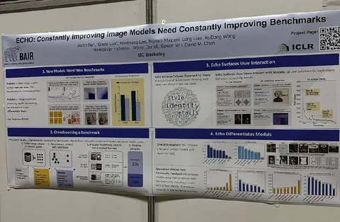

ECHO: Constantly Improving Image Models Need Constantly Improving Benchmarks
Авторы из Беркли презентуют бенчмарк ECHO для генерации и редактирования изображений. Главная цель — сблизить академическую и индустриальную разработку новых генеративных моделей.
Наиболее известные бенчмарки в этой области (ImgEdit, GEdit, GenEval) имеют достаточно простые промпты и отражают сценарии использования моделей, которые на самом деле не интересны пользователям.
Основная причина в том, что академические группы, предлагающие бенчмарки, составляют наборы семплов, исходя из своих априорных соображений о том, какие навыки генерации и редактирования важны.
Авторы ECHO провели большую работу по сбору реальных сценариев использования моделей, опубликованных в соцсетях. Они собрали, очистили и систематизировали десятки тысяч запросов и ответов в открытые и проприетарные модели, чтобы получить аналитический датасет размером 30 тысяч семплов и бенчмарк размером 1,5 тысячи семплов.
После сбора семплов важно определиться с метриками, которые будут замеряться. Для этого авторы пошли тем же путём: с помощью лингвистического анализа выделили основные критерии качества, обсуждавшиеся пользователями в контексте использования моделей. Так, например, среди метрик появился цветовой сдвиг — характерная черта генераций GPT-Image, которая также в разной степени присутствует и у некоторых других моделей. В работе предлагаются и более традиционные критерии оценки, например, сохранение черт исходного изображения.
Расспросил авторов❣ Сергей Кастрюлин
#YaICLR26
CV Time
Авторы из Беркли презентуют бенчмарк ECHO для генерации и редактирования изображений. Главная цель — сблизить академическую и индустриальную разработку новых генеративных моделей.
Наиболее известные бенчмарки в этой области (ImgEdit, GEdit, GenEval) имеют достаточно простые промпты и отражают сценарии использования моделей, которые на самом деле не интересны пользователям.
Основная причина в том, что академические группы, предлагающие бенчмарки, составляют наборы семплов, исходя из своих априорных соображений о том, какие навыки генерации и редактирования важны.
Авторы ECHO провели большую работу по сбору реальных сценариев использования моделей, опубликованных в соцсетях. Они собрали, очистили и систематизировали десятки тысяч запросов и ответов в открытые и проприетарные модели, чтобы получить аналитический датасет размером 30 тысяч семплов и бенчмарк размером 1,5 тысячи семплов.
После сбора семплов важно определиться с метриками, которые будут замеряться. Для этого авторы пошли тем же путём: с помощью лингвистического анализа выделили основные критерии качества, обсуждавшиеся пользователями в контексте использования моделей. Так, например, среди метрик появился цветовой сдвиг — характерная черта генераций GPT-Image, которая также в разной степени присутствует и у некоторых других моделей. В работе предлагаются и более традиционные критерии оценки, например, сохранение черт исходного изображения.
Интересно было узнать у автора о его направлении исследований. Работу презентовал лид проекта — человек, искренне верящий в то, что науку двигают датасеты и бенчмарки, с чем трудно не согласиться. Его стремление сделать системный подход к замерам и разобраться в том, чего именно мы хотим от моделей нового поколения, внушает искреннее уважение. Будем ждать его новую статью о замерах качества генерации длинных видео на ближайшей NeurIPS.
Расспросил авторов
#YaICLR26
CV Time

557 просмотров · 21 реакций
Открыть в Telegram · Открыть пост на сайте